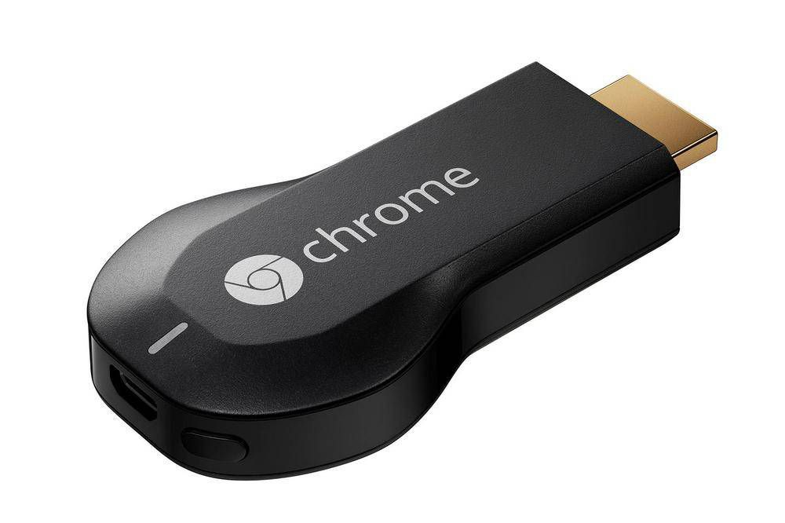

The trends of technology and how they have inspired further development to electronic devices.
Tiny PCs: Computers have been developed and advanced so much that there are plenty of options on the market for people who seek alternatives from the common desktop or laptops we see today.
Electronics have advanced to the point where most parts are more compact and efficient, we can see this in the recent developement of flash drive sized computers such as the Chromecast, the Raspberry Pi, Cstick Cotton Candy, and more.
These tiny PCs have the ability to plug into the HDMI port and run as a normal computer could, the Chromecast requires another device to cast content onto the TV or monitor that is plugged into while the Rasberry Pi and Cstick Cotton Candy act as stand-alone computers.
The ability to turn any monitor or TV into ones own personal computer is very useful if one is on the go such as vacation or work.
The abilities of these tiny PCs is a wide range dependent on the operating system used usually being a version of Linux or Android excluding the Chromecast which uses Chrome and the amount of storage available.

Tech Clothing: Tech clothing has become rather popular over the years as our technology has gotten smaller and more portable, we can see this in backpacks that special pockets designed to hold our electronics and how some have channels to run wires through such as earbuds.
Clothing brands have seen this and started to integrate these features into their designs, their main focus is mobile products as these are the electronics that most people carry around on the daily.
They have designed clear pockets for storing and using devices on the go and channels in the clothing for wires to run through such as earbuds, the all around more efficient way to carry items on your person has become the focus of more companies as they branch out into different types of clothing such as jackets with heaters inside them.

Restaurant iPad Ordering System: iPad ordering sytems for restaurants have blown up as this has pictures of each item, recommendations for what pairs well, and offers customization options for customers. This allows for people to browse the menu and order immediately when they sit down or if someone does not wish to speak to a server they can do this as well.
We have seen the screen ordering method expand to more than just restaurants too using this as retail stores have implemented screens which allow you to check if a certain item is in stock, this is incredibly convenient as it does not require an employee to go check the storage saving time.